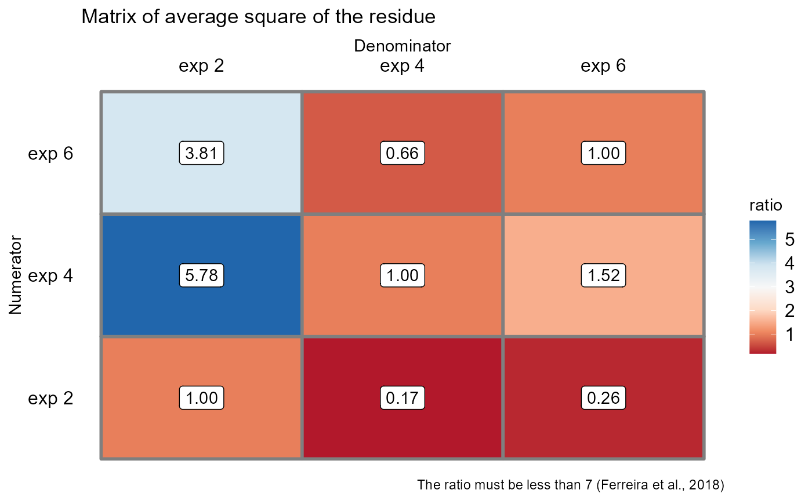
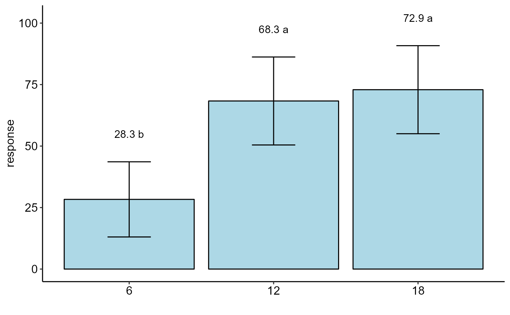
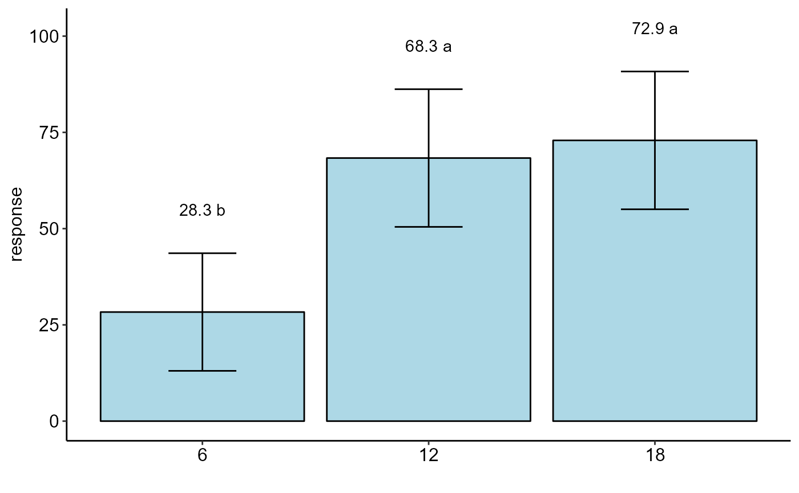

Analysis: Joint analysis of experiments in completely randomized design
conjdic.RdFunction of the AgroR package for joint analysis of experiments conducted in a completely randomized design with a qualitative or quantitative factor with balanced data.
conjdic(
trat,
repet,
local,
response,
transf = 1,
constant = 0,
norm = "sw",
homog = "bt",
mcomp = "tukey",
homog.value = 7,
quali = TRUE,
alpha.f = 0.05,
alpha.t = 0.05,
grau = NA,
theme = theme_classic(),
ylab = "response",
title = "",
xlab = "",
color = "rainbow",
fill = "lightblue",
angulo = 0,
textsize = 12,
dec = 3,
family = "sans",
errorbar = TRUE
)Arguments
- trat
Numerical or complex vector with treatments
- repet
Numerical or complex vector with repetitions
- local
Numeric or complex vector with locations or times
- response
Numerical vector containing the response of the experiment.
- transf
Applies data transformation (default is 1; for log consider 0)
- constant
Add a constant for transformation (enter value)
- norm
Error normality test (default is Shapiro-Wilk)
- homog
Homogeneity test of variances (default is Bartlett)
- mcomp
Multiple comparison test (Tukey (default), LSD, Scott-Knott and Duncan)
- homog.value
Reference value for homogeneity of experiments. By default, this ratio should not be greater than 7
- quali
Defines whether the factor is quantitative or qualitative (default is qualitative)
- alpha.f
Level of significance of the F test (default is 0.05)
- alpha.t
Significance level of the multiple comparison test (default is 0.05)
- grau
Degree of polynomial in case of quantitative factor (default is 1)
- theme
ggplot2 theme (default is theme_classic())
- ylab
Variable response name (Accepts the expression() function)
- title
Graph title
- xlab
Treatments name (Accepts the expression() function)
- color
When the columns are different colors (Set fill-in argument as "trat")
- fill
Defines chart color (to generate different colors for different treatments, define fill = "trat")
- angulo
x-axis scale text rotation
- textsize
Font size
- dec
Number of cells
- family
Font family
- errorbar
Plot the standard deviation bar on the graph (In the case of a segment and column graph) - default is TRUE
Value
Returns the assumptions of the analysis of variance, the assumption of the joint analysis by means of a QMres ratio matrix, the analysis of variance, the multiple comparison test or regression.
Note
In this function there are three possible outcomes. When the ratio between the experiments is greater than 7, the separate analyzes are returned, without however using the square of the joint residue. When the ratio is less than 7, but with significant interaction, the effects are tested using the square of the joint residual. When there is no significant interaction and the ratio is less than 7, the joint analysis between the experiments is returned.
The ordering of the graph is according to the sequence in which the factor levels are arranged in the data sheet. The bars of the column and segment graphs are standard deviation.
In the final output when transformation (transf argument) is different from 1, the columns resp and respo in the mean test are returned, indicating transformed and non-transformed mean, respectively.
References
Ferreira, P. V. Estatistica experimental aplicada a agronomia. Edufal, 2018.
Principles and procedures of statistics a biometrical approach Steel, Torry and Dickey. Third Edition 1997
Multiple comparisons theory and methods. Departament of statistics the Ohio State University. USA, 1996. Jason C. Hsu. Chapman Hall/CRC.
Practical Nonparametrics Statistics. W.J. Conover, 1999
Ramalho M.A.P., Ferreira D.F., Oliveira A.C. 2000. Experimentacao em Genetica e Melhoramento de Plantas. Editora UFLA.
Scott R.J., Knott M. 1974. A cluster analysis method for grouping mans in the analysis of variance. Biometrics, 30, 507-512.
Examples
library(AgroR)
data(mirtilo)
with(mirtilo, conjdic(trat, bloco, exp, resp))

#>
#> -----------------------------------------------------------------
#> Normality of errors
#> -----------------------------------------------------------------
#> Method Statistic p.value
#> Shapiro-Wilk normality test(W) 0.9812789 0.7876433
#>
#> As the calculated p-value is greater than the 5% significance level, hypothesis H0 is not rejected. Therefore, errors can be considered normal
#>
#> -----------------------------------------------------------------
#> Homogeneity of Variances
#> -----------------------------------------------------------------
#> Method Statistic p.value
#> Bartlett test(Bartlett's K-squared) 1.094921 0.5784169
#>
#> As the calculated p-value is greater than the 5% significance level, hypothesis H0 is not rejected. Therefore, the variances can be considered homogeneous
#>
#> -----------------------------------------------------------------
#> Independence from errors
#> -----------------------------------------------------------------
#> Method Statistic p.value
#> Durbin-Watson test(DW) 2.377661 0.4700462
#>
#> As the calculated p-value is greater than the 5% significance level, hypothesis H0 is not rejected. Therefore, errors can be considered independent
#>
#> -----------------------------------------------------------------
#> Test Homogeneity of experiments
#> -----------------------------------------------------------------
#> [1] 5.777778
#>
#> Based on the analysis of variance and homogeneity of experiments, it can be concluded that:
#> The experiments can be analyzed together
 #>
#>
#>
#> -----------------------------------------------------------------
#> Analysis of variance
#> -----------------------------------------------------------------
#> Df Sum Sq Mean Sq F value Pr(>F)
#> Trat 2 14434.7222 7217.3611 45.986726 0.001737072
#> Exp 2 4809.7222 2404.8611 15.323009 0.013329484
#> Exp:Trat 4 627.7778 156.9444 1.016492 0.416446231
#> Average residue 27 4168.7500 154.3981
#>
#> -----------------------------------------------------------------
#> Multiple Comparison Test: Tukey HSD
#> -----------------------------------------------------------------
#> resp groups
#> 18 72.91667 a
#> 12 68.33333 a
#> 6 28.33333 b

#>
#>
#>
#> -----------------------------------------------------------------
#> Analysis of variance
#> -----------------------------------------------------------------
#> Df Sum Sq Mean Sq F value Pr(>F)
#> Trat 2 14434.7222 7217.3611 45.986726 0.001737072
#> Exp 2 4809.7222 2404.8611 15.323009 0.013329484
#> Exp:Trat 4 627.7778 156.9444 1.016492 0.416446231
#> Average residue 27 4168.7500 154.3981
#>
#> -----------------------------------------------------------------
#> Multiple Comparison Test: Tukey HSD
#> -----------------------------------------------------------------
#> resp groups
#> 18 72.91667 a
#> 12 68.33333 a
#> 6 28.33333 b
